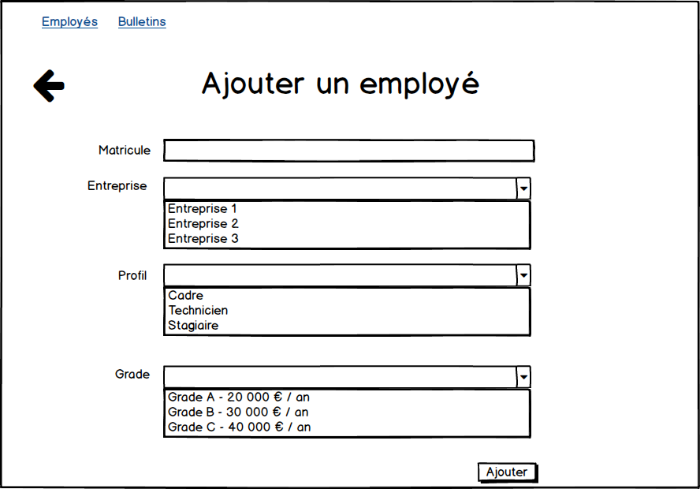
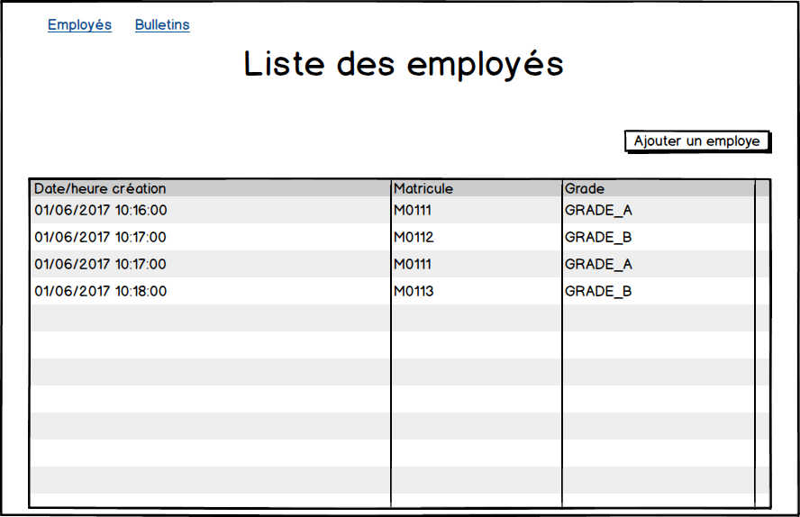
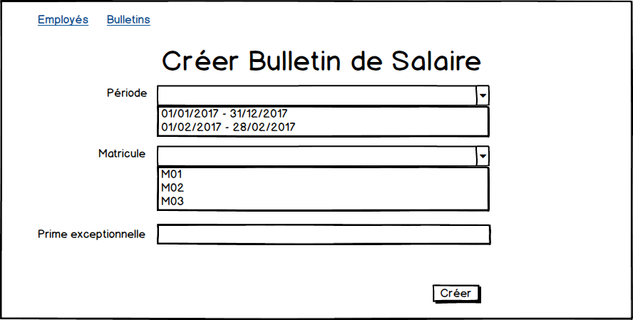
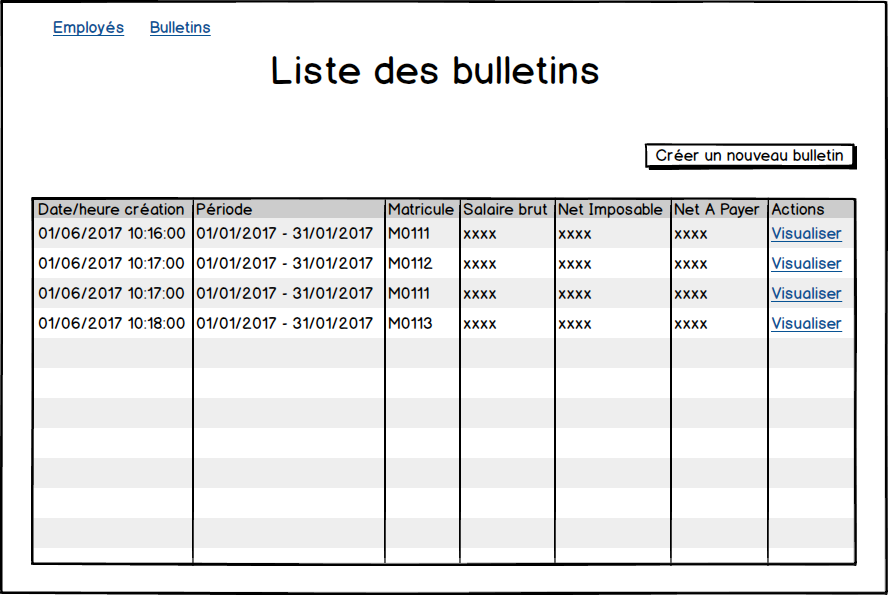
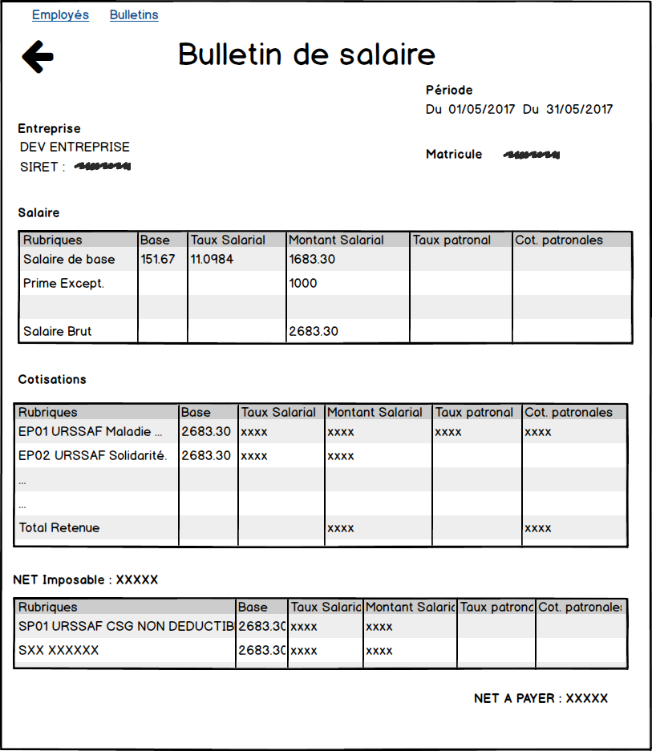

Travaux Pratiques
Projet SIRH - Gestion de la paie
Notre objectif est de créer une application de génération d'un bulletin de salaire.
    
Mise en place de l'environnement de développement
Librairies supplémentaires
- Ajouter la dépendance vers Spring WebMVC :
<dependency>
<groupId>org.springframework</groupId>
<artifactId>spring-webmvc</artifactId>
</dependency>
- La technologie de vue choisie est JSP. Nous allons ajouter une dépendance vers l'API Servlet.
<dependency>
<groupId>javax.servlet</groupId>
<artifactId>javax.servlet-api</artifactId>
<version>3.1.0</version>
<scope>provided</scope>
</dependency>
Vous vous souvenez pourquoi
- La librairie de tag JSTL sera utilisée dans les pages JSP. Ajouter la dépendance suivante :
<dependency>
<groupId>jstl</groupId>
<artifactId>jstl</artifactId>
<version>1.2</version>
</dependency>
- Si ce n'est pas déjà fait, ajouter la dépendance vers hibernate-java8 pour le support des dates Java 8 dans les mappings JPA :
<dependency>
<groupId>org.hibernate</groupId>
<artifactId>hibernate-java8</artifactId>
<version>${hibernate.version}</version>
<scope>runtime</scope>
</dependency>
Conteneur de Servlet
Pour déployer l'application sirh-gestion-paie, nous allons utiliser le conteneur de servlet Apache Tomcat.
Télécharger Tomcat : https://tomcat.apache.org/download-80.cgi (version 8.5.15, rubrique Core > zip). Décompresser l'archive.
Créer un fichier src/main/webapp/index.html :
<!DOCTYPE html>
<html>
<head>
<meta charset="UTF-8">
<title>PAIE</title>
</head>
<body>
<h1>SIRH - Gestion de la paie</h1>
</body>
</html>
Déployer depuis STS l'application Web sous Tomcat. Comment on fait ? Vous allez trouver j'en suis sûr, souvenez-vous du cours de Java EE ;-)
Vérifier que la page web s'affiche dans le navigateur.
Profitez de l'occasion pour ajouter Twitter Bootstrap au projet.
Mise en place de Spring MVC
- Créer la classe de configuration dev.paie.config.WebAppConfig :
@Configuration
@EnableWebMvc
@ComponentScan("dev.paie.web.controller")
public class WebAppConfig {
@Bean
public ViewResolver viewResolver() {
return new InternalResourceViewResolver("/WEB-INF/views/", ".jsp");
}
}
- Créer un contrôleur : dev.paie.web.controller.RemunerationEmployeController :
@Controller
@RequestMapping("/employes")
public class RemunerationEmployeController {
@RequestMapping(method = RequestMethod.GET, path = "/creer")
public ModelAndView creerEmploye() {
ModelAndView mv = new ModelAndView();
mv.setViewName("employes/creerEmploye");
mv.addObject("prefixMatricule","M00");
return mv;
}
}
- Créer un fichier src/main/webapp/WEB-INF/views/employes/creerEmploye.jsp avec le contenu suivant :
<h1>Créer Employe</h1>
<p>Préfixe Matricule : ${prefixMatricule}</p>
- Créer la classe de démarrage de Spring MVC dev.paie.web.WebAppInitializer :
package dev.paie.web;
import javax.servlet.ServletContext;
import javax.servlet.ServletException;
import javax.servlet.ServletRegistration;
import org.springframework.web.WebApplicationInitializer;
import org.springframework.web.context.ContextLoaderListener;
import org.springframework.web.context.support.AnnotationConfigWebApplicationContext;
import org.springframework.web.servlet.DispatcherServlet;
import dev.paie.config.WebAppConfig;
public class WebAppInitializer implements WebApplicationInitializer {
@Override
public void onStartup(ServletContext servletContext) throws ServletException {
// Initialisation du contexte Spring
AnnotationConfigWebApplicationContext webContext = new AnnotationConfigWebApplicationContext();
webContext.register(WebAppConfig.class);
/*
<servlet>
<servlet-name>dispatcher</servlet-name>
<servlet-class>org.springframework.web.servlet.DispatcherServlet</servlet-class>
<load-on-startup>1</load-on-startup>
</servlet>
*/
ServletRegistration.Dynamic dispatcher = servletContext.addServlet("dispatcher", new DispatcherServlet(webContext));
dispatcher.setLoadOnStartup(1);
/*
<servlet-mapping>
<servlet-name>dispatcher</servlet-name>
<url-pattern>/mvc/*</url-pattern>
</servlet-mapping>
*/
dispatcher.addMapping("/mvc/*");
/*
<listener>
<listener-class>org.springframework.web.context.ContextLoaderListener</listener-class>
</listener>
*/
servletContext.addListener(new ContextLoaderListener(webContext));
}
}
- Redémarrer l'application et tester la page : http://localhost:8080/paie/mvc/employes/creer. Vous devriez avoir le résultat suivant :
Jeux de données
Nous allons modifier l'application pour avoir le comportement suivant : à chaque redémarrage, le schéma de base de données est supprimé puis recréé et enfin un jeux de données est inséré.
Drop And Create
Modifions la configuration JPA pour activer le mode drop-and-create de JPA.
- Modifier la classe dev.paie.config.JpaConfig comme suit :
...
public class JpaConfig {
...
@Bean
// Cette configuration nécessite une source de données configurée.
// Elle s'utilise donc en association avec un autre fichier de configuration
// d éfinissant un bean DataSource.
public EntityManagerFactory entityManagerFactory(DataSource dataSource) {
HibernateJpaVendorAdapter vendorAdapter = new HibernateJpaVendorAdapter();
//vendorAdapter.setGenerateDdl(true); <1>
// activer les logs SQL
vendorAdapter.setShowSql(true);
LocalContainerEntityManagerFactoryBean factory = new LocalContainerEntityManagerFactoryBean();
factory.setJpaVendorAdapter(vendorAdapter);
// alternative au persistence.xml
factory.setPackagesToScan("dev.paie.entite");
factory.setDataSource(dataSource);
Properties jpaProperties = new Properties(); <2>
jpaProperties.setProperty("javax.persistence.schema-generation.database.action", "drop-and-create");<2>
factory.setJpaProperties(jpaProperties);<2>
factory.afterPropertiesSet();
return factory.getObject();
}
}
<1> Mettre un commentaire sur cette ligne
<2> Configurer le mode drop-and-create.
- Vérifier que les données sont bien supprimées entre 2 redémarrages.
Service InitialiserDonneesService
- Créer une interface dev.paie.service.InitialiserDonneesService.
package dev.paie.service;
public interface InitialiserDonneesService {
void initialiser();
}
- Créer un écouteur de démarrage d'une application Spring
Cette classe doit faire partie du contexte Spring pour fonctionner.
package dev.paie.web.listener;
import org.springframework.beans.factory.annotation.Autowired;
import org.springframework.context.event.ContextRefreshedEvent;
import org.springframework.context.event.EventListener;
import org.springframework.stereotype.Component;
import dev.paie.service.InitialiserDonneesService;
@Component
public class StartUpAppListener {
@Autowired
private InitialiserDonneesService initService;
@EventListener(ContextRefreshedEvent.class)
public void contextRefreshedEvent() {
// capture du démarrage de l'application
// à un moment où le contexte Spring est complètement créé
initService.initialiser();
}
}
- Créer une implémentation de ce service dev.paie.service.InitialiserDonneesServiceDev qui insère les données suivantes :
- Cotisations
- Entreprises
- Grade
- ProfilRemuneration
- Periode
Pour vous éviter une saisie fastidieuse des données, je vous fournis les fichiers suivants : cotisations-imposables.xml, cotisations-non-imposables.xml,
entreprises.xml, grades.xml, profils-remuneration.xml.
A vous de récupérer ces données et les insérer programmatiquement en base de données.
Pas de XML pour les périodes ? Exact ! Vous allez générer 12 périodes programmatiquement de l'année courante.
Pour 2017, vous aurez par exemple :
1 -> 2017-01-01 - 2017-01-31
2 -> 2017-02-01 - 2017-02-28
3 -> 2017-03-01 - 2017-03-31
4 -> 2017-04-01 - 2017-04-30
5 -> 2017-05-01 - 2017-05-31
6 -> 2017-06-01 - 2017-06-30
7 -> 2017-07-01 - 2017-07-31
8 -> 2017-08-01 - 2017-08-31
9 -> 2017-09-01 - 2017-09-30
10 -> 2017-10-01 - 2017-10-31
11 -> 2017-11-01 - 2017-11-30
12 -> 2017-12-01 - 2017-12-31
- Ecrivez tout le code nécessaire pour insérer toutes les données au démarrage de l'application.
Page Créer employé
- Implémenter la page de création d'un employé.
Page Lister employés
- Implémenter la page de liste des employés.
Page Créer bulletin
- Implémenter la page génération d'un bulletin de salaire.
Page Lister bulletin
- Implémenter la page de liste de bulletins.
Page Visualiser bulletin
- Implémenter la page de visualisation de bulletin.